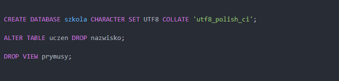
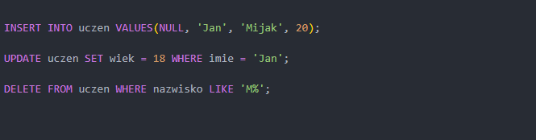
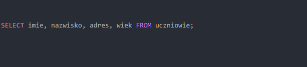
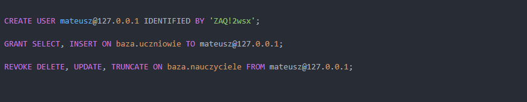
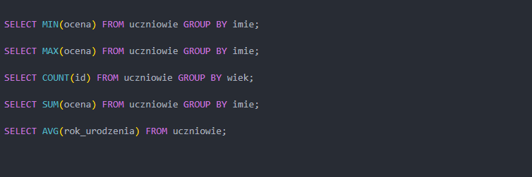
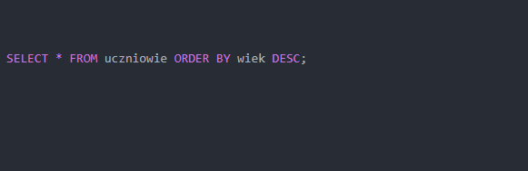
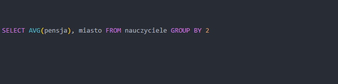
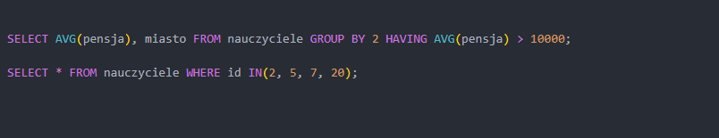
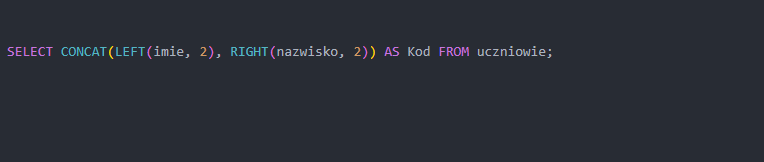
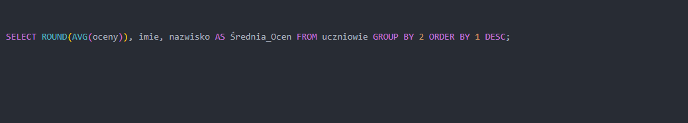

Język SQL jest językiem zapytań do bazy danych. Pozwala na zarządzanie danymi w tej bazie poprzez dodawanie, usuwanie, aktualizację, wybieranie danych struktur.
Podstawowe informacje
Baza danych jest uporządkowanym zbiorem informacji zazwyczaj w formie odpowiednich tabel połączonych ze sobą relacją.
Najpopularniejszym modelem baz danych jest model relacyjny, gdzie tabele połączone są ze sobą za pomocą kluczy podstawowych i obcych.
Klucz podstawowy musi być unikalny i jasny
Klucz obcy jest referencją na klucz podstawowy. Pozwala na połączenie tabel ze sobą i wspólne łączenie danych.
Systemy bazodanowe to np. MySQL, Oracle, MSSQL itd.
Po więcej informacji dotyczących teoretycznych baz danych, odsyłam pod ten link. My zaś, przyjrzymy się praktycznej części obsługi zapytań.

DDL
Data Definition Language. Język definicji danych, ogólna część służąca do tworzenia struktury baz, tabel, widoków.
- CREATE – Tworzenie struktury
- ALTER – Modyfikacja struktury
- DROP – Usuwanie struktury
- TRUNCATE – Czyszczenie tabeli z danych poprzez usunięcie tabeli i jej ponowne utworzenie

DML
Data Manipulation Language. Język modyfikacji danych. Umożliwia zarządzanie danymi zapisywanymi w tabelach, widokach.
- INSERT – Wstawianie danych do tabeli
- UPDATE – Aktualizacja danych w tabeli (często powiązane z warunkiem WHERE)
- DELETE – Usuwanie danych z tabeli (często powiązane z warunkiem WHERE)

DQL
Data Query Language. Język zapytań. Związany głównie z słowem SELECT, który pozwala na wybieranie danych z konkretnych tabel.

DCL
Data Control Language. Język kontroli danych, czyli powiązany z obsługą użytkowników i zarządzaniu ich uprawnieniami.
- GRANT – Nadawanie uprawnień do baz, tabel dla użytkowników
- REVOKE – Odbieranie uprawnień do baz, tabel danym użytkownikom
Oczywiście z tą częścią wiążą się słowa CREATE i DROP USER, lecz myślę, że jest to logiczne

Funkcje Agregujące
Funkcje agregujące są funkcjami, które działają w zależny sposób na danych.
- MIN – Zwraca minimalną wartość w kolumnie
- MAX – Zwraca maksymalną wartość w kolumnie
- COUNT – Zwraca ilość rekordów
- SUM – Sumuje wartości w kolumnie
- AVG – Oblicza średnią wartość z danych w kolumnie
Z tymi funkcjami, wiążą się słowa GROUP BY oraz HAVING, które omówione są niżej

Sortowanie Danych
Do sortowania danych, możemy użyć słowa ORDER BY. Domyślnie, sortowanie odbywa się od najmniejszej do największej wartości (ASC), lecz aby zrobić odwrotnie, należy użyć słowa DESC.
Należy też wskazać kolumnę, po której mają się sortować dane poprzez jej nazwę LUB odpowiedni indeks (począwszy od 1)

Grupowanie Danych
Grupowanie danych dotyczy głównie powyższych funkcji agregujących. Wskazuje ono, po jakiej kolumnie te dane mają się grupować, gdyż bez podania tego słowa -> funkcje wykonają swoje działania na wszystkich rekordach (lub pierwszej tylko kolumnie)

Rodzaje warunkowania
Często czy to w zapytaniach, czy to w aktualizacjach lub usuwaniach danych należy uszczegółowić, które dane dotyczy to zapytanie. Do tego służy słowo WHERE.
Natomiast HAVING jest takim samym słowem, co WHERE, lecz HAVING działa tylko na zgrupowanych już rekordach, np. kiedy chcemy wyświetlić konkretne średnie

Funkcje Tekstowe
Funkcje tekstowe odpowiadają za manipulowaniem ciągu znaków.
- LEFT – Pobiera odpowiednią ilość znaków od lewej strony z podanego ciągu znaków
- CONCAT – Łączy ze sobą podane ciągi znaków
- RIGHT - Pobiera odpowiednią ilość znaków od prawej strony z podanego ciągu znaków

Funkcje Matematyczne
W kwestii funkcji matematycznych, najważniejszą z nich będzie ROUND, czyli zaokrąglanie do podanej liczby miejsc po przecinku.
Po więcej informacji warto zobaczyć taki artykuł
